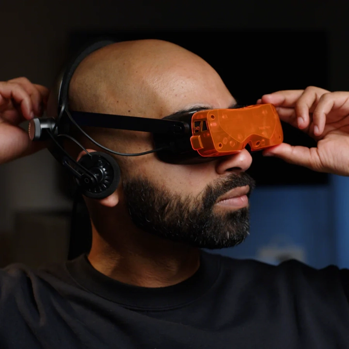
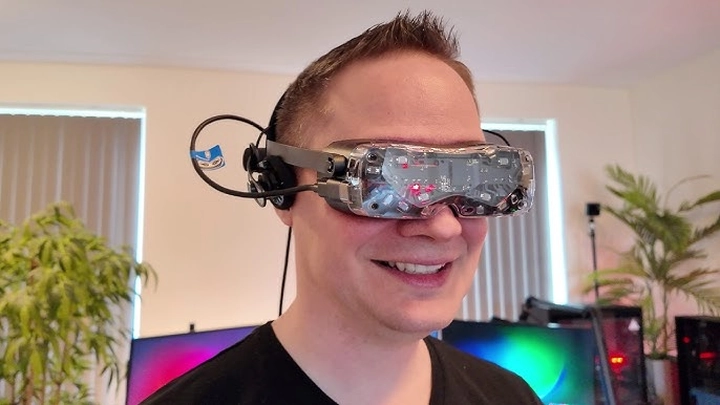
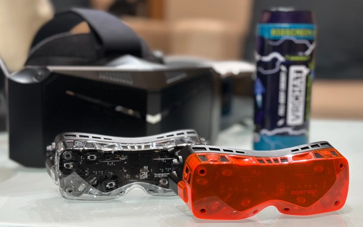
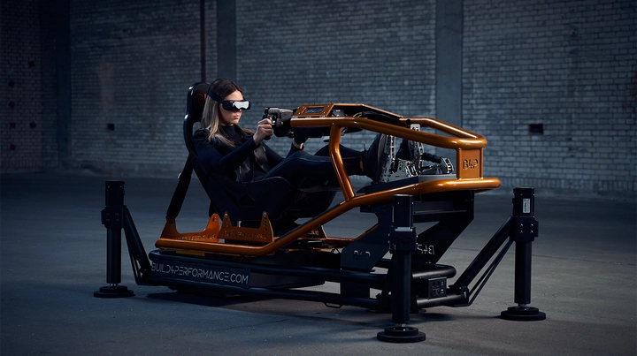

Bigscreen Beyond 2: Chiếc headset VR nhẹ nhất thế giới
Thời gian gần đây, tín đồ yêu công nghệ toàn cầu đang sục sôi trước sự xuất hiện của Bigscreen Beyond 2 – chiếc VR headset nhẹ nhất hành tinh. Là thế hệ kế nhiệm của mẫu Beyond đầu tiên, sản phẩm này đánh dấu một bước tiến vượt bậc về thiết kế và hiệu năng.
Không chỉ duy trì danh hiệu “nhỏ nhất thế giới”, Beyond 2 còn chứng minh rằng sự nhỏ gọn không hề đánh đổi sức mạnh. Với công nghệ màn hình micro-OLED thế hệ mới, hệ thống theo dõi chính xác tuyệt đối và khả năng tùy chỉnh ôm khít khuôn mặt từng người dùng, Bigscreen Beyond 2 đang trở thành tâm điểm của làng công nghệ thực tế ảo năm 2025, mở ra kỷ nguyên mới cho trải nghiệm VR cá nhân.
1. Thiết kế: Nhỏ gọn đến khó tin
Bigscreen Beyond 2 mang đến một bước tiến mang tính cách mạng trong thiết kế headset VR. Với trọng lượng chỉ 127 gram, đây là chiếc kính thực tế ảo nhẹ nhất từng được sản xuất, thậm chí còn nhẹ hơn nhiều so với một chiếc điện thoại thông thường. Nhưng điều khiến Beyond 2 thực sự khác biệt không chỉ nằm ở con số này — mà ở triết lý thiết kế hướng đến sự vừa vặn tuyệt đối và trải nghiệm cá nhân hóa.
Khung vỏ được làm từ vật liệu polymer siêu nhẹ kết hợp sợi carbon, giúp giảm tối đa khối lượng nhưng vẫn đảm bảo độ bền và cảm giác chắc chắn khi cầm trên tay. Các đường cong và góc bo mềm mại ôm trọn khuôn mặt người đeo, tránh tình trạng cấn mũi hay tạo áp lực lên trán — điều mà hầu hết các headset truyền thống vẫn chưa khắc phục được.

Điểm độc đáo nhất của Beyond 2 chính là quy trình đo khuôn mặt 3D (3D face scan). Khi đặt hàng, người dùng sẽ thực hiện quét khuôn mặt bằng ứng dụng riêng của Bigscreen, từ đó công ty sẽ tạo ra miếng đệm mặt được in 3D riêng biệt cho từng người, vừa khít từng đường nét khuôn mặt. Nhờ vậy, Beyond 2 không chỉ nhẹ mà còn mang lại cảm giác “đeo như không đeo” — thứ mà các nhà sản xuất VR khác chỉ mới mơ tới.
Ngoài ra, Bigscreen cũng tinh chỉnh hệ thống dây đeo mềm dẻo, giúp phân bổ trọng lượng đồng đều quanh đầu thay vì tập trung ở phía trước. Cáp kết nối được thiết kế dạng dẹt, gọn gàng và hướng ra phía trên, tránh vướng víu khi người dùng xoay đầu hay di chuyển.
Tất cả những chi tiết này tạo nên một tổng thể tinh tế, vừa hiện đại vừa công thái học. Với Beyond 2, Bigscreen không chỉ làm ra một thiết bị VR nhỏ hơn, mà là một trải nghiệm đeo hoàn toàn mới — nhẹ, thoáng, và cực kỳ thoải mái, giúp người dùng có thể đắm mình trong thế giới ảo hàng giờ mà không cảm thấy mệt mỏi.
2. Trọng lượng: “Nhẹ như không đeo”
Nếu như trước đây, việc đeo một chiếc kính VR trong nhiều giờ đồng nghĩa với cảm giác nặng nề, đau cổ và nóng nực, thì Bigscreen Beyond 2 đã thay đổi hoàn toàn điều đó. Với trọng lượng chỉ 127 gram, tương đương 1/3 trọng lượng của Meta Quest 3, Beyond 2 gần như mang đến cảm giác “biến mất” trên khuôn mặt người dùng.
Để đạt được con số ấn tượng này, Bigscreen đã tối ưu hóa toàn bộ cấu trúc bên trong: từ hệ thống thấu kính nhỏ gọn hơn nhưng có độ hội tụ cao, cho đến việc sử dụng mạch in siêu mỏng nhằm giảm khối lượng mà không ảnh hưởng đến hiệu suất truyền dữ liệu. Ngay cả dây cáp cũng được tinh chỉnh với lõi nhẹ hơn, giúp giảm đáng kể áp lực kéo.
Ngoài ra, tâm trọng lực của thiết bị được cân chỉnh hoàn hảo. Điều này giúp trọng lượng được phân bố đều khắp đầu thay vì dồn về phía trước, hạn chế hiện tượng mỏi cổ – điều từng khiến nhiều người e ngại khi sử dụng các headset VR trước đây.
Khi đeo Beyond 2, người dùng hầu như không còn cảm giác “mang thiết bị”, mà chỉ còn lại sự tập trung trọn vẹn vào thế giới ảo trước mắt. Sự nhẹ nhàng này mở ra khả năng trải nghiệm VR lâu hơn bao giờ hết – dù là chơi game, xem phim hay làm việc trong môi trường ảo.
3. Hiệu năng: Nhỏ nhưng mạnh mẽ
Đừng để kích thước nhỏ bé đánh lừa bạn — bên trong Beyond 2 là một cỗ máy hiệu năng cao thực thụ. Thiết bị được trang bị màn hình micro-OLED độ phân giải 5120x2560 pixel (2560x2560 mỗi mắt), mang đến hình ảnh sắc nét đến từng chi tiết nhỏ nhất. Mỗi khung hình đều sống động, mượt mà nhờ tần số quét 90Hz, đảm bảo trải nghiệm ổn định kể cả trong các trò chơi hoặc môi trường chuyển động nhanh.
Một trong những điểm đột phá của Beyond 2 là việc sử dụng bộ xử lý hình ảnh chuyên dụng thế hệ mới. Con chip này có khả năng giảm độ trễ xuống mức gần như không thể nhận ra bằng mắt thường, giúp mọi chuyển động đầu và góc nhìn đều được phản ánh tức thì. Người dùng sẽ có cảm giác như “thật sự đang ở trong không gian đó”, chứ không phải chỉ đang nhìn qua màn hình.

Bên cạnh đó, Bigscreen đã cải thiện khả năng chống hiện tượng screen-door (hiệu ứng lưới điểm ảnh) – vốn là vấn đề phổ biến trên nhiều headset VR. Nhờ mật độ điểm ảnh cực cao và thuật toán tái tạo hình ảnh tiên tiến, Beyond 2 mang lại khung cảnh ảo với độ mịn và chiều sâu vượt trội, không hề xuất hiện răng cưa hay nhiễu sáng.
Dù có kích thước siêu nhỏ, Beyond 2 vẫn duy trì hiệu năng mạnh mẽ tương thích với hệ sinh thái SteamVR và OpenXR, cho phép tận dụng tối đa sức mạnh từ PC để tái tạo không gian thực tế ảo chi tiết, mượt mà và cực kỳ chân thật.
4. Màn hình và độ phân giải
Cốt lõi tạo nên sức hấp dẫn của Bigscreen Beyond 2 chính là công nghệ hiển thị micro-OLED thế hệ thứ hai, vốn được đánh giá là một trong những tiến bộ quan trọng nhất trong ngành VR. Với mật độ điểm ảnh hơn 55 pixel trên mỗi độ nhìn (PPD) – tăng hơn 30% so với phiên bản đầu tiên – Beyond 2 mang đến hình ảnh rõ nét đến mức gần như không thể phân biệt được với thế giới thực.
Mỗi điểm ảnh micro-OLED đều phát sáng độc lập, giúp tạo nên màu đen sâu tuyệt đối và độ tương phản vượt trội so với màn hình LCD truyền thống. Kết quả là người dùng có thể cảm nhận được sự khác biệt rõ rệt: bóng tối trong game thực sự “đen”, ánh sáng phản chiếu chân thực và chi tiết vật thể trở nên sắc sảo hơn bao giờ hết.
Không chỉ có độ phân giải cao, Beyond 2 còn đạt độ sáng tối ưu lên đến hơn 500 nits mà vẫn giữ mức tiêu thụ năng lượng thấp, nhờ công nghệ điều khiển điểm ảnh mới. Điều này giúp hình ảnh duy trì độ tươi sáng ổn định ngay cả khi chạy các cảnh phức tạp hoặc môi trường ánh sáng thay đổi nhanh.
Đặc biệt, góc nhìn (FOV) 93° ngang và 90° dọc được tinh chỉnh để tạo cảm giác bao phủ tự nhiên mà không gây méo hình. Nhờ sự kết hợp giữa độ phân giải cao, màu sắc trung thực và khả năng hiển thị chi tiết ấn tượng, Bigscreen Beyond 2 mang lại một thế giới ảo giàu chiều sâu – nơi từng tia sáng, từng họa tiết nhỏ đều được tái hiện với độ chính xác đáng kinh ngạc.
5. Trải nghiệm thực tế và độ thoải mái
Một trong những điểm khiến Bigscreen Beyond 2 được cộng đồng VR đánh giá cao chính là trải nghiệm đeo cực kỳ thoải mái, điều mà ngay cả những hãng lớn như Meta hay HTC vẫn đang loay hoay cải thiện. Với trọng lượng siêu nhẹ và thiết kế ôm sát khuôn mặt, Beyond 2 gần như xóa bỏ hoàn toàn cảm giác “nặng đầu” thường thấy ở các headset truyền thống.
Beyond 2 cho phép tùy chỉnh khoảng cách giữa hai mắt (IPD) với độ chính xác cao, giúp hình ảnh được hiển thị đúng tiêu điểm và hạn chế tình trạng mỏi mắt khi sử dụng lâu. Đây là yếu tố quan trọng đối với người dùng có cấu trúc khuôn mặt khác nhau, đặc biệt là khi trải nghiệm game hoặc phim 3D có chiều sâu mạnh.

Điểm cộng lớn khác là khả năng tương thích với người đeo kính cận. Bigscreen thiết kế phần đệm mặt và khung ống kính đủ rộng để vừa với nhiều loại gọng kính, đồng thời vẫn giữ độ kín khít cần thiết cho hiển thị VR. Người dùng cũng có thể tùy chọn kính thấu kính prescription lens riêng do Bigscreen cung cấp, giúp giảm trọng lượng và tăng sự tiện lợi.
Ngoài ra, hệ thống thông gió và tản nhiệt thụ động được thiết kế tinh tế ở các khe phía trên và hai bên, giúp giảm tích tụ nhiệt khi sử dụng liên tục. Nhờ vậy, người dùng có thể chơi game, xem phim hoặc làm việc trong không gian ảo nhiều giờ mà không cảm thấy nóng hay đổ mồ hôi.
Khi đeo Beyond 2, cảm giác đầu tiên là sự tự nhiên và nhẹ bẫng – gần như chỉ còn lại sự hiện diện của thế giới ảo trước mắt. Từng chuyển động, từng góc nhìn đều mượt mà, không hề bị xao nhãng bởi cảm giác vật lý của thiết bị. Chính sự tinh tế này khiến Beyond 2 trở thành lựa chọn hàng đầu cho những ai coi trọng sự thoải mái và tính thực tế trong trải nghiệm VR dài hạn.
6. Hệ thống theo dõi và cảm biến
Một chiếc headset VR chỉ thực sự sống động khi hệ thống theo dõi (tracking) của nó đủ chính xác để “đánh lừa” bộ não rằng bạn đang ở trong một không gian khác. Và đó là lý do Bigscreen Beyond 2 tiếp tục sử dụng SteamVR Tracking – công nghệ được giới chuyên môn xem là chuẩn vàng trong độ chính xác của VR tracking hiện nay.
SteamVR Tracking hoạt động dựa trên hệ thống base station (Lighthouse), sử dụng tín hiệu laser để xác định chính xác vị trí và hướng chuyển động của headset trong không gian 3D. Kết hợp với cảm biến con quay hồi chuyển (gyroscope) và gia tốc kế (accelerometer) tích hợp bên trong, Beyond 2 có thể phản ứng gần như tức thời với từng chuyển động nhỏ của đầu người dùng, kể cả khi quay nhanh, cúi gập hoặc nghiêng sang hai bên.
Khả năng phản hồi gần như không có độ trễ này giúp trải nghiệm trở nên liền mạch và tự nhiên, tránh được cảm giác “say VR” mà nhiều người từng gặp khi dùng thiết bị thực tế ảo kém ổn định.
Ngoài ra, Bigscreen còn tinh chỉnh thuật toán đồng bộ giữa chuyển động đầu và khung hình hiển thị, đảm bảo độ chính xác cao trong cả môi trường ánh sáng yếu hoặc khi người dùng di chuyển liên tục. Với hệ thống theo dõi tiên tiến này, Beyond 2 không chỉ phục vụ tốt cho việc chơi game VR mà còn đáp ứng yêu cầu khắt khe của mô phỏng chuyên nghiệp và công việc ảo, nơi độ chính xác tính bằng milimet.
7. Tương thích phần mềm và kết nối
Một điểm cộng lớn khác của Bigscreen Beyond 2 là khả năng tương thích phần mềm cực rộng, giúp người dùng không bị giới hạn trong một hệ sinh thái khép kín. Beyond 2 hoạt động hoàn hảo với SteamVR – nền tảng thực tế ảo phổ biến nhất thế giới hiện nay, nơi tập hợp hàng ngàn tựa game, trải nghiệm và ứng dụng VR chất lượng cao.
Không chỉ dừng lại ở đó, thiết bị còn hỗ trợ tiêu chuẩn OpenXR, cho phép kết nối với nhiều phần mềm VR khác nhau, từ Unity, Unreal Engine cho tới các nền tảng sáng tạo 3D chuyên nghiệp. Điều này mở ra khả năng sử dụng Beyond 2 trong không chỉ giải trí mà còn trong giáo dục, đào tạo mô phỏng, thiết kế sản phẩm và trình diễn ảo.
Về mặt phần cứng, Beyond 2 kết nối thông qua DisplayPort và USB-C, đảm bảo tín hiệu hình ảnh được truyền trực tiếp từ GPU mà không qua nén – điều giúp duy trì chất lượng hiển thị tối đa, đặc biệt quan trọng với màn hình độ phân giải cao như micro-OLED. Tốc độ truyền dữ liệu ổn định, độ trễ cực thấp giúp người dùng cảm nhận hình ảnh và âm thanh đồng bộ tuyệt đối.
Cáp được thiết kế dạng mảnh, nhẹ và dễ quản lý, có thể gắn cố định vào giá treo hoặc PC mà không gây vướng víu. Với cấu hình này, Beyond 2 hướng tới nhóm người dùng PCVR chuyên nghiệp, những người muốn khai thác sức mạnh của card đồ họa cao cấp để đạt hiệu suất tối đa mà không phải đánh đổi trải nghiệm đeo.
Nhờ khả năng tương thích linh hoạt, Bigscreen Beyond 2 không chỉ là một thiết bị VR để giải trí, mà là một công cụ thực tế ảo toàn diện, có thể đáp ứng cả nhu cầu công việc lẫn sáng tạo nội dung ảo trong tương lai.
8. So sánh với các đối thủ
Thị trường VR đang trở nên sôi động hơn bao giờ hết với hàng loạt cái tên lớn như Meta Quest 3, Apple Vision Pro hay Pimax Crystal. Tuy nhiên, Bigscreen Beyond 2 vẫn tạo được vị thế riêng nhờ cách tiếp cận khác biệt – tập trung tuyệt đối vào sự nhỏ gọn, nhẹ và vừa vặn cá nhân hóa.
Nếu Meta Quest 3 hướng đến người dùng phổ thông với triết lý “tất cả trong một” (all-in-one), thì Beyond 2 lại chọn con đường chuyên biệt – phục vụ nhóm người dùng PCVR cao cấp muốn tận hưởng hình ảnh sắc nét và độ phản hồi nhanh nhất có thể. Quest 3 có lợi thế ở khả năng hoạt động độc lập, nhưng chính phần cứng tích hợp này lại khiến thiết bị dày, nặng và giảm tính thoải mái khi sử dụng lâu dài.

Apple Vision Pro thì ở một đẳng cấp khác: mạnh mẽ, đa năng và đắt đỏ. Sản phẩm của Apple tập trung nhiều hơn vào AR (thực tế tăng cường) và hệ sinh thái riêng, phù hợp với công việc sáng tạo và giải trí cao cấp. Tuy nhiên, trọng lượng gần nửa ký cùng giá bán hơn 3.000 USD khiến Vision Pro trở nên xa vời với phần lớn người dùng VR. Beyond 2 tuy không mạnh bằng, nhưng mang lại cảm giác đeo dễ chịu và trải nghiệm thực tế ảo tập trung thuần túy, không bị pha trộn giữa AR – VR.
Trong khi đó, Pimax Crystal nổi bật với độ phân giải cực cao, nhưng đổi lại là kích thước cồng kềnh, dễ nóng và yêu cầu cấu hình PC cực mạnh. Beyond 2 có thể không đạt mức chi tiết cực đoan như Crystal, nhưng lại cân bằng hoàn hảo giữa hình ảnh, trọng lượng và sự tiện dụng – điều mà Pimax vẫn chưa làm được.
Tổng thể, Bigscreen Beyond 2 là sự lựa chọn lý tưởng cho người dùng đề cao trải nghiệm đeo thoải mái, hình ảnh chân thực và độ chính xác cao. Nó không cố gắng trở thành “mọi thứ”, mà tập trung làm một việc duy nhất – và làm cực kỳ tốt: mang đến trải nghiệm VR nhẹ, tự nhiên và liền mạch nhất hiện nay.
9. Giá bán và ngày ra mắt
Bigscreen Beyond 2 được chính thức công bố với mức giá 999 USD, một con số được xem là rất cạnh tranh trong phân khúc VR cao cấp. Dù cao hơn các headset phổ thông như Meta Quest 3, nhưng mức giá này hoàn toàn hợp lý khi xét đến chất lượng hiển thị micro-OLED, độ nhẹ kỷ lục, và đặc biệt là khả năng tùy chỉnh 3D-fit theo khuôn mặt từng người dùng – tính năng mà không hãng nào khác cung cấp.
Beyond 2 dự kiến bắt đầu giao hàng từ tháng 12 năm 2025, và người dùng đã có thể đặt trước trên website chính thức của Bigscreen. Khi đặt hàng, khách hàng sẽ được hướng dẫn quét khuôn mặt 3D bằng ứng dụng di động, sau đó công ty sẽ in riêng miếng đệm phù hợp với cấu trúc khuôn mặt từng người.
Đây là mô hình sản xuất theo đơn made-to-order, đảm bảo mỗi sản phẩm đều độc nhất và tối ưu cho người sở hữu. Chính cách tiếp cận này khiến Beyond 2 không chỉ là một thiết bị công nghệ, mà còn là một sản phẩm mang tính cá nhân hóa sâu sắc, thể hiện rõ triết lý “VR được thiết kế riêng cho bạn”.
Với sự đầu tư nghiêm túc về trải nghiệm người dùng, cùng thời điểm ra mắt hợp lý khi thị trường VR đang phục hồi mạnh mẽ, Bigscreen Beyond 2 được kỳ vọng sẽ trở thành một trong những headset đáng chú ý nhất năm 2025, đặc biệt trong phân khúc PCVR chuyên nghiệp.
10. Kết luận: Tương lai của trải nghiệm VR cá nhân
Bigscreen Beyond 2 không chỉ là bản nâng cấp của một thiết bị VR, mà là tuyên ngôn cho kỷ nguyên mới của thực tế ảo cá nhân – nơi trọng lượng, kích thước và sự thoải mái trở thành yếu tố trung tâm của trải nghiệm.
Với thiết kế siêu nhẹ chỉ 127 gram, màn hình micro-OLED sắc nét, khả năng tùy chỉnh theo khuôn mặt từng người và hệ thống theo dõi chính xác tuyệt đối, Beyond 2 đã chứng minh rằng sự nhỏ gọn không đồng nghĩa với sự đánh đổi. Thay vì chạy đua cấu hình, Bigscreen tập trung vào yếu tố con người – cảm giác thật, nhẹ, và dễ chịu – để đưa VR đến gần hơn với đời sống hàng ngày.
Beyond 2 không phải là thiết bị “ồn ào” hay mang tính phô trương, mà là một trải nghiệm VR thuần túy, tinh tế và cá nhân hóa, hướng đến người dùng hiểu rõ mình cần gì trong thế giới ảo. Đây chính là hướng đi thông minh, khác biệt và đầy tiềm năng để định hình lại cách chúng ta nhìn nhận về thực tế ảo trong những năm tới.
Trong tương lai, khi các công nghệ VR ngày càng hội tụ và tinh gọn, Bigscreen Beyond 2 có thể được xem như bước ngoặt mở đầu cho thế hệ headset VR cá nhân nhẹ, gọn, và hoàn toàn “vô hình” với người đeo – một bước tiến mà cả ngành công nghiệp VR đang nỗ lực hướng đến.